전자산업기사 (2011-03-20 기출문제)
1과목: 전자회로
1. PN 접합 다이오드에서 정공과 전자가 서로 반대쪽으로 흘러나가는 것을 방해하는 것은 접합부에 무엇이 있기 때문인가?
- 페르미 준위
- 전자궤도
- 에너지 준위
- 전위장벽
(정답률: 91%)

2. 전력증폭기에서 전력이득이 20이다. 이것은 약 몇 [dB]인가?
- 10[dB]
- 13[dB]
- 26[dB]
- 33[dB]
(정답률: 61%)
3. 다음 연산증폭기 회로에서 R1=3[kΩ], R2=6[kΩ]일 경우 전압이득 Av는 얼마인가?
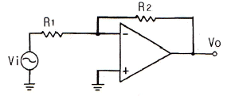
- -2
- 2
- -3
- 3
(정답률: 84%)
4. 수정 발진기는 수정 진동자의 리액턴스 주파수 특성이 어떻게 될 때 안정한 발진을 지속하는가?
- 용량성
- 유도성
- 저항성
- 임피던스성
(정답률: 76%)
5. 푸시풀(push-pull) 전력 증폭기에서 출력 파형의 찌그러짐이 작아지는 주요 이유는?
- 홀수열 고조파가 상쇄되기 때문
- 짝수열 고조파가 상쇄되기 때문
- 홀수열 및 짝수열 고조파가 상쇄되기 때문
- 직류 성분이 없어지기 때문
(정답률: 83%)
6. 차동 증폭기에서 동상신호제거비(CMRR)에 대한 설명으로 옳은 것은?
- 이 값이 클수록 우수한 증폭기가 된다.
- 차동 이득은 작을수록 우수한 증폭기가 된다.
- 동상 이득은 클수록 우수한 증폭기가 된다.
- 이 값이 크면 증폭기의 잡음출력이 크다.
(정답률: 81%)
7. 다음 중 포스터-실리 검파기와 비 검파기의 특징에 대한 설명으로 옳지 않은 것은?
- 비 검파기는 진폭 제한 작용도 한다.
- 포스터-시릴 검파기와 비 검파기는 회로 구성에서 다이오드의 접속 방향이 서로 다르다.
- 비 검파기는 부하 저항의 중간점이 접지되어 있다.
- 포스터-실리 검파기의 감도가 더 둔하다.
(정답률: 67%)
8. 효율은 좋으나 출력파형이 심하게 일그러지므로 고주파 동조 증폭기에 한정적으로 응용되는 전력 증폭기는?
- A급 전력증폭기
- B급 전력증폭기
- C급 전력증폭기
- AB급 전력증폭기
(정답률: 78%)
9. RC 결합 증폭회로에서 증폭 대역폭을 2배로 하려면 증폭 이득을 약 몇 [dB] 감소시켜야 하는가?
- 2[dB]
- 4[dB]
- 6[dB]
- 12[dB]
(정답률: 72%)
10. 다음과 같은 회로에서 출력 전압 VO는?
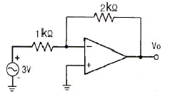
- -3[V]
- -4[V]
- -5[V]
- -6[V]
(정답률: 84%)
11. 궤환 회로가 발진하기 위해서는 Barkhausen 발진 조건을 만족해야 한다. A가 발진기의 증폭도, β가 궤환량을 나타낼 때 이 조건을 바르게 나타낸 것은?
- βA = 0
- βA > 10
- βA = 1
- βA < ∞
(정답률: 81%)
12. 다음 π형 평활회로에 대한 설명으로 옳은 것은?
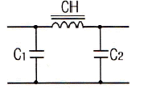
- C1, C2의 용량이 증가하면 차단주파수가 높아진다.
- CH의 인덕턴스가 증가하면 차단주파수가 높아진다.
- 일반적으로 초크 입력형보다 전압변동률이 크다.
- C1, C2의 용량이 증가하면 리플 함유율이 커진다.
(정답률: 65%)
13. 다음 원소 중 도너로 사용되지 않는 것은?
- In(인듐)
- P(인)
- As(비소)
- Sb(안티몬)
(정답률: 80%)
14. 다음 변조 방식 중 불연속 변조 방식은?
- PCM
- AM
- FM
- PM
(정답률: 86%)
15. FET 핀치-오프(pinch-off) 전압에 대한 설명으로 가장 적합한 것은?
- 최대전류가 흐를 수 있는 드레인과 소스 사이에 최대 전압
- FET 애벌런치(Avalanche) 전압
- 채널 폭이 막힌 때의 게이트 역방향 전압
- 채널 폭이 최대로 되는 게이트(Gate)의 역방향 전압
(정답률: 63%)
16. 다음 중 연산증폭기의 응용 예로 적합하지 않은 것은?
- 능동 여파기
- RC 발진기
- 디지털 계산기
- A/D 변환기
(정답률: 65%)
17. 연산증폭기의 입력단은 주로 무슨 회로로 구성되는가?
- 공통 이미터 증폭기
- 차동 증폭기
- 이미터 폴로어
- 공통 드레인 증폭기
(정답률: 72%)
18. 변압기를 사용하지 않는 전력 증폭회로에서 push-pull 회로의 조건으로 거리가 먼 것은?
- 두 입력의 크기는 같을 것
- 위상차는 180°일 것
- B급에서 동작할 것
- 전원 효율이 50[%]이하일 것
(정답률: 78%)
19. 이상적인 연산 증폭기의 조건이 옳지 않은 것은?
- 전압이득이 무한대이다.
- 입력 임피던스가 무한대이다.
- 출력 임피던스가 무한대이다.
- 대역폭이 무한대이다.
(정답률: 78%)
20. 다음 중 부궤환 증폭기의 특징에 대한 설명으로 적합하지 않은 것은?
- 이득이 감소한다.
- 잡음이 감소한다.
- 주파수 대역폭이 증가한다.
- 입ㆍ출력 임피던스 값의 변화가 없다.
(정답률: 79%)
2과목: 전기자기학 및 회로이론
21. A = 2i - 5j + 3k 일 때, k × A 를 구하면?
- -5i + 2j
- 5i - 2j
- -5i - 2j
- 5i + 2j
(정답률: 44%)
22. 전자유도에 의해서 회로에 발생하는 기전력에 관련된 법칙은?
- 가우스 법칙
- 옴의 법칙
- 페러데이 법칙
- 암페어 법칙
(정답률: 81%)
23. 유전율
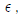
, 투자율 μ인 매질 내에서 전자파의 전파속도는 몇 [m/s]인가?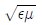
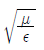
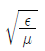
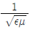
(정답률: 60%)
24. 내부저항 r인 전원에서 저항 R인 부하에 전력을 공급할 경우, 최대 전력이 되기 위한 조건은?
- r > R
- r < R
- r = R
- r = 0, R = ∞
(정답률: 65%)
25. 환상 철심에 A, B 코일이 감겨있다. A 코일의 전류가 150[A/sec]로 변화할 때 코일 A에 45[V], B에 30[V]의 기전력이 유기될 때의 B 코일의 자기인덕턴스[mH]는? (단, 결합계수 k=1이라 한다.)
- 133
- 200
- 257
- 300
(정답률: 45%)
26. 그림과 같이 공극의 면적이 100[cm2]인 전자석의 자속밀도가 0.5[Wb/m2]인 철편을 흡인하는 힘은 약 몇 [N] 인가?
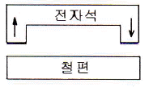
- 1000
- 2000
- 3000
- 4000
(정답률: 75%)
27. 반지름이 각각 1[cm] 및 2[cm]인 금속구가 비유전율 10인 변압기유(油) 속에 1[m] 떨어져 있다. 각 구의 전위가 동일하게 10[kV]라면 두 금속구 사이에 작용하는 반발력은 약 몇 [N]인가?
- 2.2×10-5
- 2.2×10-7
- 4.2×10-5
- 4.2×10-7
(정답률: 55%)
28. 무한히 넓은 2개의 평형 도체판의 간격이 d[m]이며 그 전위차는 V[V]이다. 도체판의 단위면적에 작용하는 힘은 몇 [N/m2]인가?
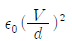
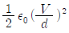
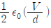
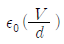
(정답률: 66%)
29. 합성수지의 절연체에 5×103 [V/m]의 전계를 가했을 때, 이때의 전속밀도를 구하면 약 몇 [c/m2]이 되는가? (단, 이 절연체의 비유전율은 10으로 한다.)
- 1.1×10-4
- 2.2×10-5
- 3.3×10-6
- 4.4×10-7
(정답률: 47%)
30. 공기 중에 d[m]의 간격으로 평행한 무한히 긴 직선 도선 A, B에 전류 I1[A], I2[A]가 흐를 때 평행한 도선간에 흐르는 전류에 의하여 작용하는 힘[N/m]은?
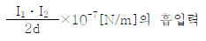
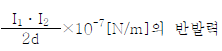
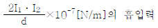
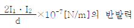
(정답률: 73%)
31. 인덕턴스 L1=20[mH], L2=50[mH]인 두 코일간의 상호 인덕턴스 M이 30[mH]라고 할 때 결합계수 K는 약 얼마인가?
- 0.55
- 0.68
- 0.85
- 0.95
(정답률: 62%)
32. 하이브리드 파라미터 중 출력 단락시 입력 임피던스는?
- H11
- H12
- H21
- H22
(정답률: 48%)
33. 다음 중 정형파 교류 전압의 파형률은?
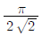
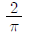
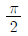
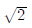
(정답률: 72%)
34. 그림과 같은 회로에서 임피던스가 주파수에 관계없이 항상 일정한 값 R로 되기 위한 조건은?
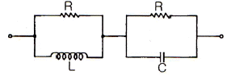
- R = L = C
- L = C
- R2 = L/C
- R2 = C/L
(정답률: 71%)
35. 다음 회로에서 등가 임피던스는?
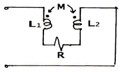
- jω (L1 + L2 - 2M)
- jω (L1 + L2 + 2M)
- jω (L1 + L2 - 2M) +R
- jω (L1 + L2 + 2M) +R
(정답률: 72%)
36. sint의 Laplace 변환은?
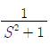
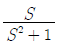
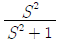
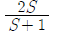
(정답률: 70%)
37. “몇 개의 전압원과 전류원이 동시에 존재하는 회로망에 있어서 회로 전류는 각 전압원이 각각 단독으로 가해졌을 때(다른 전류원은 개방, 전압원은 단락시킴) 흐르는 전류를 합한 것과 같다.”라는 것은?
- 중첩의 원리
- 키르히호프의 법칙
- 테브난의 정리
- 노톤의 정리
(정답률: 86%)
38. 인덕턴스 L, 정전용량 C인 무손실 분포 정수 선로에서 특성 임피던스는?
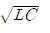
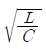
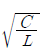
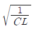
(정답률: 56%)
39. E[volt]의 전압을 라플라스 변환하면?
- E
- ES
- E/S
- E2
(정답률: 81%)
40. 커패시터에 정현파 전압을 인가하였을 때, 용량성 전류(Ic)와 용량성 리액턴스(Xc)와의 위상각 차이는?
- 0°
- 45°
- 90°
- 180°
(정답률: 62%)
3과목: 전자계산기일반
41. 어떤 명령이 실행되기 위해서 가장 먼저 이루어지는 마이크로오퍼레이션은?
- MBR ← PC
- PC ← PC+1
- IR ← MBR
- MAR ← PC
(정답률: 86%)
42. 다음 ASCII code의 설명으로 틀린 것은?
- 7개의 데이터 비트로 구성된다.
- ASCCII-8 code는 7비트의 ASCII code에 패리티 비트가 있다.
- 8개의 데이터 비트는 4개의 존 비트와 4개의 디짓 비트로 구성되어 있다.
- 패리티 비트는 에러검출을 위한 것이며, 에러에 대한 교정은 불가능하다.
(정답률: 70%)
43. 프로그램 컴파일(compile) 수행 단계 중 마지막 모듈(module)은?
- source module
- assemble module
- load module
- object module
(정답률: 52%)
44. 논리식
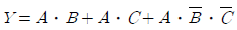
를 간단히 하면?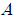
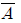
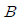
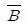
(정답률: 76%)
45. 4096×8 EPROM인 메모리에서 어드레스와 데이터는 각각 몇 비트씩인가?
- 어드레스: 8비트, 데이터: 8비트
- 어드레스: 8비트, 데이터: 12비트
- 어드레스: 12비트, 데이터: 8비트
- 어드레스: 12비트, 데이터: 12비트
(정답률: 73%)
46. 메모리로부터 데이터를 가져오는 용어가 아닌 것은?
- LOAD
- READ
- WRITE
- FETCH
(정답률: 68%)
47. 다음 중 C 언어의 scanf( ) 함수에 대한 설명으로 잘못된 것은?
- 표준 입력 함수이다.
- 배열명은 일반 변수를 인수로 사용하는 것과 동일하게 사용한다.
- 입력되는 문자수를 제어할 수 있다.
- 제어문자는 printf( )와 동일하게 사용된다.
(정답률: 61%)
48. 누산기(accumulator)에 대한 설명으로 옳은 것은?
- 연산명령은 순서를 일시 기억하는 장치이다.
- 연산의 순서와 부호를 일시 기억하는 장치이다.
- 다음에 실행할 명령어의 주소를 기억하는 장치이다.
- 연산 결과를 일시 기억하는 장치이다.
(정답률: 78%)
49. 0-주소 명령형식에서 명령어 길이가 16비트일 때, 연산자(operation code)의 크기는?
- 4비트
- 8비트
- 16비트
- 32비트
(정답률: 52%)
50. 레지스터 중 고정소수점 데이터 등을 기억하고 여러 가지의 목적으로 사용될 수 있는 레지스터는?
- 명령 레지스터
- 범용 레지스터
- 프로그램 카운터
- 인덱스 레지스터
(정답률: 73%)
51. 시프트 레지스터(shift register)에 저장된 2진수가 5번 shift-left 되었다. 연산동작 완료 후의 수는 처음의 몇 배가 되는가?
- 5
- 10
- 16
- 32
(정답률: 71%)
52. 표(table) 및 배열(array) 구조의 데이터를 처리하고자 할 경우 명령어들의 유용한 주소 지정 방식은?
- 인덱스 주소 지정
- 직접 주소 지정
- 간접 주소 지정
- 메모리 참조 주소 지정
(정답률: 70%)
53. 16384×16의 용량을 가진 메모리에서 MAR은 몇 비트로 구성되는가?
- 12
- 14
- 16
- 32
(정답률: 60%)
54. 명령어(instruction)는 어떻게 구성되는가?
- 명령코드와 주소부
- 명령코드와 레지스터 번호
- 산술명령과 논리명령
- 1차 주소부와 2차 주소부
(정답률: 66%)
55. 보조기억장치로 사용되고 있는 CD-ROM과 DVE에 대한 설명으로 틀린 것은?
- CD-ROM과 DVD에서 사용하는 레이저의 파장은 같다.
- DVD는 기존 CD와의 호환성이 높은 멀티미디어 CD 방식과 기록용량을 높이기에 용이한 초밀도 방식(SD)이 있다.
- CD-ROM의 디스크 구조는 단층인데 반해, DVD는 2층까지 있다.
- CD-ROM과 DVD의 배속을 표현할 때, 각각 기본적인 데이터 전송속도의 배수이다.
(정답률: 68%)
56. 원시프로그램(source program)을 컴파일(compile)하여 얻어지는 프로그램은?
- 실행 프로그램
- 시스템 프로그램
- 유틸리티 프로그램
- 목적 프로그램
(정답률: 79%)
57. 연관 메모리에 대한 설명으로 틀린 것은?
- 내용에 의해 액세스(access)하는 메모리이다.
- 병렬탐색에 알맞은 메모리이다.
- 데이터의 탐색은 전체 워드만으로 한다.
- 내용을 비교하기 위한 논리회로가 있어서 탐색 시간이 짧다.
(정답률: 68%)
58. 10진수 -543을 다음과 같이 표현하는 수치 자료의 표현방법은?
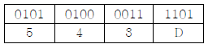
- 고정 소수점 표현
- 부동 소수점 표현
- 팩(packed)형 10진 표현법
- 언팩(unpacked)형 10진 표현법
(정답률: 82%)
59. DMA(Direct Memory Access) 방식에 대한 설명으로 틀린 것은?
- DMA는 주기억장치를 접근하기 위해서 Cycle Stealing 방법을 사용한다.
- DMA 기능을 위해서 DMA controller는 내부에 buffer와 register를 가진다.
- 일반적으로 고속 데이터 전송시 전용 DMA controller를 사용한다.
- 실제의 데이터 전송은 CPU 내부의 register를 주소 사용한다.
(정답률: 57%)
60. JK 플립플롭에서 J=0, K=1로 입력될 때 플립플롭은 어떤 변화를 갖는가?
- 먼저 내용에 대한 complement로 된다.
- 먼저 내용이 그대도 남는다.
- 0으로 변한다.
- 1로 변한다.
(정답률: 77%)
4과목: 전자계측
61. 계수형 카운터(counter)로서 초저주파 측정시 가장 정밀하게 측정할 수 있는 방법은?
- 직접 주파수 측정법
- 시간에 따른 주기 측정법
- 전압에 의한 주파수 측정법
- 회전수에 따른 주파수 측정법
(정답률: 70%)
62. 고주파 회로를 측정할 때의 주의사항 중 옳지 않은 것은?
- 표유 임피던스를 크게 할 것
- 평형 및 불평형 회로를 구분 사용할 것
- 주파수대에 적합한 회로 소자를 사용할 것
- 기기(機器) 또는 회로의 임피던스를 정합시킬 것
(정답률: 75%)
63. 기록계기, 전자 오실로그래프, 정전형계기에 널리 사용되는 제동 장치는?
- 액체 제동
- 스프링 제동
- 공기 제동
- 전자 제동
(정답률: 51%)
64. 다음 중 소인 발진기를 사용할 때 병행 사용하는 계기는?
- 고주파 발진기
- 감쇠기
- 진공관 전압계
- 오실로스코프
(정답률: 74%)
65. 헤테로다인 주파수계에서 Single beat 법보다 Double beat 법이 좋은 이유는?
- 구조가 간단하다.
- 취급이 용이하다.
- 오차가 적다
- 측정범위가 넓다.
(정답률: 65%)
66. 다음 중 회로 전류 측정 방법으로서 적합하지 않은 것은?
- 도선 외착형(導線 外着型) 측정 프로브(probe) 사용
- 직렬로 저저항 삽입, 전압 강하 독출법
- 전류계를 직렬로 넣는다.
- 전류계를 병렬로 넣는다.
(정답률: 63%)
67. 헤테로다인(heterodyne) 주파수계의 교정 방법이 아닌 것은?
- 표준 전파로 교정하는 방법
- 보간 발진기를 사용하는 방법
- 2중 비트(double beat)를 사용하는 방법
- 수정 발진기를 직접 비트(beat)시키는 방법
(정답률: 63%)
68. 레헤르선 주파수계의 주파수를 구하는 식은? (단, l은 전류계상의 지시가 최대가 되는 인접한 두 점간의 거리로서 l = λ/2 , λ는 파장, C는 광속이다.)
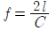
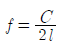
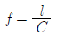
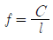
(정답률: 68%)
69. 다음 중 계수형 주파수계로 측정할 수 없는 것은?
- 주기
- 분주비
- 주파수비
- 주파수 스펙트럼
(정답률: 65%)
70. 전류계 내부 저항이 RA [Ω]이고, 배율이 M일 때 분규기 저항의 크기 RS는 몇 [Ω]인가?
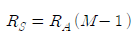
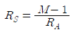
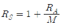
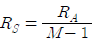
(정답률: 42%)
71. 다음 중 스트로보스코프(stroboscope)로 측정할 수 있는 것은?
- 전류
- 조도
- 전압
- 회전수
(정답률: 77%)
72. 오실로스코프 프로브의 입력 캐패시턴스가 13[pF]일 때 600[Ω]의 신호원으로부터 발생된 신호를 3[dB] 감쇠시키는 프로브의 신호 주파수는 약 얼마인가?
- 20.4[MHz]
- 40.8[MHz]
- 64.1[MHz]
- 78.8[MHz]
(정답률: 53%)
73. 기록계기에 관한 설명 중 옳지 않은 것은?
- 펜식, 타점식, 자동평형식 등이 있다.
- 변화하는 값을 긴 시간동안 연속 측정하여 기록하는 계기이다.
- 변화하지 않는 값을 단시간에 측정하고 기록에 남기지 않는 계기이다.
- 펜식은 1.5급, 타점식은 1.0급, 자종평형식은 0.5급 정도이다.
(정답률: 73%)
74. 디지털 주파수계의 전체 블록도 중에서 시미트 트리거(schmitt trigger) 회로의 기능은?
- 구형파를 정형파로 변화
- 구형파를 삼각파로 변화
- 정현파를 구형파로 변화
- 구형파를 펄스파로 변화
(정답률: 72%)
75. 지시계기의 동작원리를 나타낸 것으로, 상호관계가 옳지 않은 것은?
- 열전대형계기 - 열기전력
- 정전형계기 - 전자작용
- 유도형계기 - 회전자계 및 이동자계
- 전류력계형 - 코일의 자계
(정답률: 50%)
76. 다음 중 소인 발진기의 용도로 옳지 않은 것은?
- 주파수 변별기의 특성 측정
- 송신기의 DC 측정
- 광대역 증폭기의 특성 측정
- 수신기의 중간주파 특성 측정
(정답률: 52%)
77. 디지털 주파수계에서 카운터 부분의 회로는 어떤 회로로 구성되어 있는가?
- 리미터 회로
- 클램핑 회로
- 모노멀티 회로
- 플립플롭 회로
(정답률: 80%)
78. 다음 중 접지 저항을 측정하는데 사용되는 브리지법은?
- 비교 브리지법
- 셰링 브리지법
- 빈 브리지법
- 콜라우슈 브리지법
(정답률: 62%)
79. 고주파에 의해 발생하는 오차와 관계없는 것은?
- 표피효과
- 접촉저항
- 공진오차
- 파형오차
(정답률: 47%)
80. Q-미터에 의해 측정하는데 적당하지 않은 것은?
- 코일의 분포용량
- 코일의 인덕턴스
- 콘덴서의 정전용량
- 공진 주파수
(정답률: 61%)